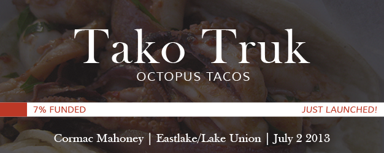

Profile edit

Cormac Mahoney
I've cooked most of my life with my family. My mom would be working, so I’d put the chicken in the oven when I got home from school. Now I think the public fetishizes dinner parties, but to me, cooking was my grandma just making straight-up food for the table. And my aunts bringing pies and salads. One of my first food memories was my aunt’s taco salad, with Doritos and ground beef and shredded lettuce and shredded cheddar. That was one of the first food compliments I remember giving—I told her, ‘This is really, really good.’
Current

Past
Backed
None